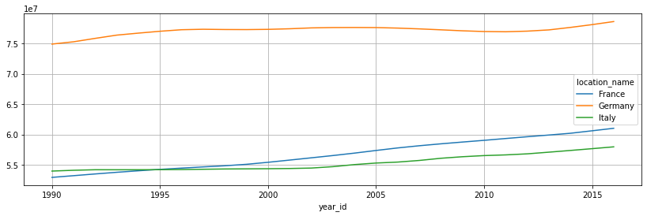
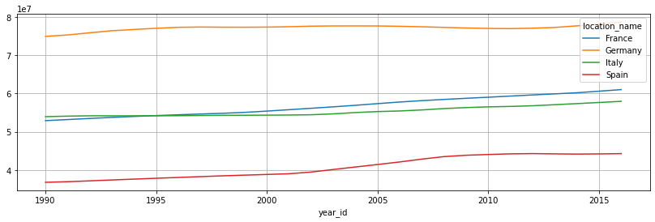

Challenge: Processing of Tabular Data
Contents
Challenge: Processing of Tabular Data#
Import Statements
%matplotlib inline
import pandas as pd
import matplotlib.pyplot as plt
Read the data#
Challenge: Read the IHME_GBD_2016_POPULATION_ESTIMATES_1990_2016_Y2017M09D14.CSV file stored in the ../data/ folder and store it to a variable namend pop. Hint: Use the pd.read_csv function.#
## your code here
pop = pd.read_csv("../data/IHME_GBD_2016_POPULATION_ESTIMATES_1990_2016_Y2017M09D14.CSV")
pop
| location_id | location_name | sex_id | sex_name | age_group_id | age_group_name | year_id | pop | |
|---|---|---|---|---|---|---|---|---|
| 0 | 1 | Global | 1 | Male | 1 | Under 5 | 1990 | 3.073378e+08 |
| 1 | 1 | Global | 2 | Female | 1 | Under 5 | 1990 | 2.911299e+08 |
| 2 | 1 | Global | 3 | Both | 1 | Under 5 | 1990 | 5.984677e+08 |
| 3 | 1 | Global | 1 | Male | 1 | Under 5 | 1991 | 3.089656e+08 |
| 4 | 1 | Global | 2 | Female | 1 | Under 5 | 1991 | 2.921822e+08 |
| ... | ... | ... | ... | ... | ... | ... | ... | ... |
| 603931 | 44639 | Middle SDI | 2 | Female | 235 | 95 plus | 2015 | 3.984956e+05 |
| 603932 | 44639 | Middle SDI | 3 | Both | 235 | 95 plus | 2015 | 5.625882e+05 |
| 603933 | 44639 | Middle SDI | 1 | Male | 235 | 95 plus | 2016 | 1.766505e+05 |
| 603934 | 44639 | Middle SDI | 2 | Female | 235 | 95 plus | 2016 | 4.302028e+05 |
| 603935 | 44639 | Middle SDI | 3 | Both | 235 | 95 plus | 2016 | 6.068534e+05 |
603936 rows × 8 columns
# %load ../src/_solutions/tab_data01.py
Inspect the data#
Challenge: Inspect the data by#
printing the column names
counting the number of unique entries in the
location_namecolumnprinting some location names
figuring out the unique categories for the
sex_nameandage_groupcolumns
Exploratory Data Analysis#
printing the column names
## your code here
pop.columns
Index(['location_id', 'location_name', 'sex_id', 'sex_name', 'age_group_id',
'age_group_name', 'year_id', 'pop'],
dtype='object')
counting the number of unique entries in the
location_namecolumn
## your code here
pop["location_name"].nunique()
231
printing some location names
## your code here
pop["location_name"].sample(10)
267801 The Bahamas
461473 Madagascar
279546 Dominica
382355 Oman
4900 Southeast Asia, East Asia, and Oceania
535522 Liberia
215828 Italy
285363 Guyana
517477 Cape Verde
119337 Macedonia
Name: location_name, dtype: object
figuring out the unique categories for the
sex_nameandage_groupcolumns
## your code here
pop["sex_name"].unique()
array(['Male', 'Female', 'Both'], dtype=object)
## your code here
pop["age_group_name"].unique()
array(['Under 5', 'Early Neonatal', 'Late Neonatal', 'Post Neonatal',
'1 to 4', '5 to 9', '10 to 14', '15 to 19', '20 to 24', '25 to 29',
'30 to 34', '35 to 39', '40 to 44', '45 to 49', '50 to 54',
'55 to 59', '60 to 64', '65 to 69', '70 to 74', '75 to 79',
'All Ages', '5-14 years', '15-49 years', '50-69 years',
'70+ years', '<1 year', '80 to 84', '85 to 89', '90 to 94',
'<20 years', '10-24 years', '95 plus'], dtype=object)
# %load ../src/_solutions/tab_data02.py
Analyzing a subset of the dataset#
Challenge: Subset the data set based on age groups, location and sex as given below and save the resulting data frame to a variable called pop_subset.#
Subsetting
ages = ['5-14 years', '15-49 years', '50-69 years','70+ years']
location = ["Germany", "France", "Italy"]
sex = ['Male', 'Female']
## your code here
cond = (
pop["age_group_name"].isin(ages) &
pop["location_name"].isin(location) &
pop["sex_name"].isin(sex)
)
pop_subset = pop.loc[cond,:]
print(pop_subset.shape)
pop_subset.sample(5)
(648, 8)
| location_id | location_name | sex_id | sex_name | age_group_id | age_group_name | year_id | pop | |
|---|---|---|---|---|---|---|---|---|
| 204010 | 81 | Germany | 2 | Female | 24 | 15-49 years | 2007 | 18932511.72 |
| 203953 | 81 | Germany | 2 | Female | 23 | 5-14 years | 2015 | 3472927.37 |
| 216904 | 86 | Italy | 2 | Female | 23 | 5-14 years | 2012 | 2718458.12 |
| 201535 | 80 | France | 2 | Female | 26 | 70+ years | 1992 | 3534207.71 |
| 201502 | 80 | France | 2 | Female | 25 | 50-69 years | 2008 | 7352088.01 |
# %load ../src/_solutions/tab_data03.py
Split-Apply-Combine#
 Image source: Jake VanderPlas 2016, Data Science Handbook
Image source: Jake VanderPlas 2016, Data Science Handbook
## your code here
gb = pop_subset.groupby(["year_id", "location_name"])["pop"].sum()
gb
year_id location_name
1990 France 52924678.45
Germany 74905392.07
Italy 53965720.67
1991 France 53204997.81
Germany 75282202.61
...
2015 Germany 78112961.81
Italy 57659331.41
2016 France 61020069.08
Germany 78619000.77
Italy 57960714.36
Name: pop, Length: 81, dtype: float64
# %load ../src/_solutions/tab_data04.py
Challenge: Compute the population of Germany, Italy and France for the years 1990 to 2016. Hint: Use the groupby function.#
Plotting#
Challenge:#
Plot how the the population of Germany, Italy and France changed over the years 1990 to 2016.
## your code here
gb.unstack().plot(figsize=(14,4))
plt.grid()

# %load ../src/_solutions/tab_data05.py
Challenge: Redo the analysis from above but now include Spain in addition to Germany, Italy and France into the analysis.#
Solution:#
Append
'Spain'into the location list and rerun the code above
location
['Germany', 'France', 'Italy']
location.append('Spain')
location
['Germany', 'France', 'Italy', 'Spain']
## your code here
cond = (
pop["age_group_name"].isin(ages) &
pop["location_name"].isin(location) &
pop["sex_name"].isin(sex)
)
pop_subset = pop.loc[cond,:]
print(pop_subset.shape)
pop_subset.sample(5)
(864, 8)
| location_id | location_name | sex_id | sex_name | age_group_id | age_group_name | year_id | pop | |
|---|---|---|---|---|---|---|---|---|
| 201310 | 80 | France | 2 | Female | 23 | 5-14 years | 1998 | 3682781.74 |
| 217018 | 86 | Italy | 2 | Female | 25 | 50-69 years | 1996 | 6959415.53 |
| 201358 | 80 | France | 2 | Female | 23 | 5-14 years | 2014 | 3874590.71 |
| 216969 | 86 | Italy | 1 | Male | 24 | 15-49 years | 2007 | 13828699.00 |
| 216930 | 86 | Italy | 1 | Male | 24 | 15-49 years | 1994 | 14475224.99 |
## your code here
gb = pop_subset.groupby(["year_id", "location_name"])["pop"].sum()
gb
year_id location_name
1990 France 52924678.45
Germany 74905392.07
Italy 53965720.67
Spain 36832506.47
1991 France 53204997.81
...
2015 Spain 44243841.58
2016 France 61020069.08
Germany 78619000.77
Italy 57960714.36
Spain 44315872.48
Name: pop, Length: 108, dtype: float64
## your code here
gb.unstack().plot(figsize=(14,4))
plt.grid()
